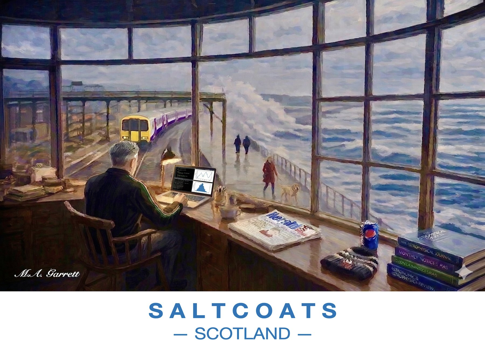

Window on the Sea, Saltcoats
A man works at a laptop in a bay window overlooking the Saltcoats seafront, with astronomy journals stacked on the sill, a train passing and waves breaking on the promenade.
Paintings of the Ayrshire coast

A man works at a laptop in a bay window overlooking the Saltcoats seafront, with astronomy journals stacked on the sill, a train passing and waves breaking on the promenade.